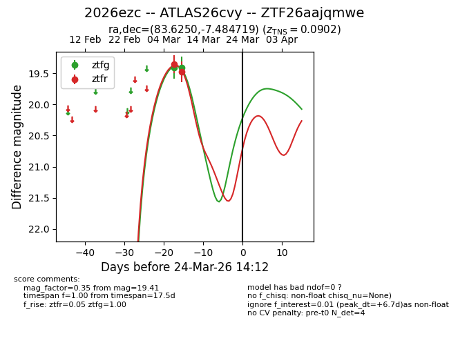
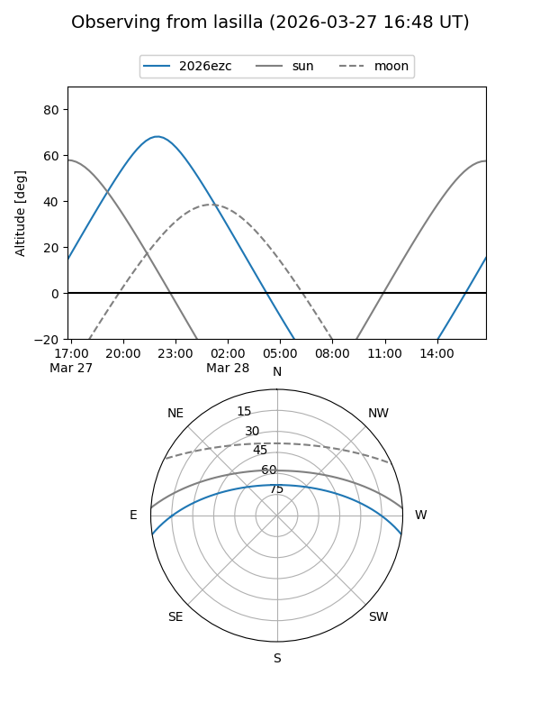
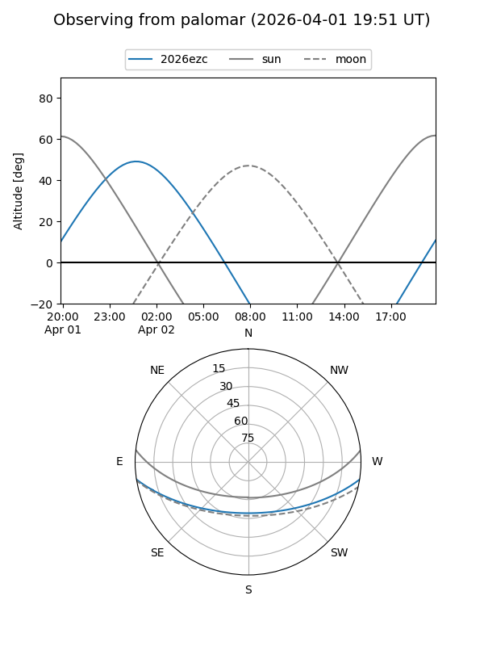
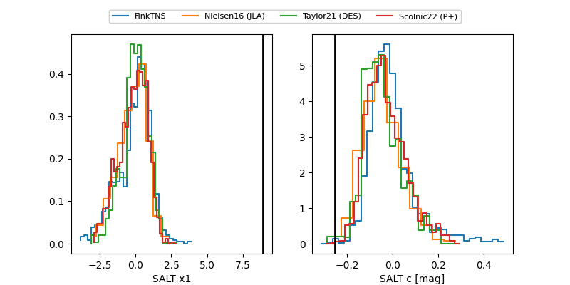

2026ezc
Target 2026ezc at 2026-03-24 14:15
Aliases and brokers:
FINK: link
Lasair: link
ALeRCE: link
TNS: link
YSE: link
alt names
ZTF26aajqmwe (ztf,fink_ztf)
2026ezc (tns,yse)
ATLAS26cvy (atlas)
Coordinates:
equatorial (ra, dec) = 83.6250,-7.48472
equatorial (HMS+DMS) = 05:34:30.01,-07:29:04.99
galactic (l, b) = (210.9127,-20.49294)
Flags:
confirmed ia
Photometry:
last ztfg=19.41, ztfr=19.48
2 ztfg, 2 ztfr detections
Lightcurve

Visibility


Additional plots
